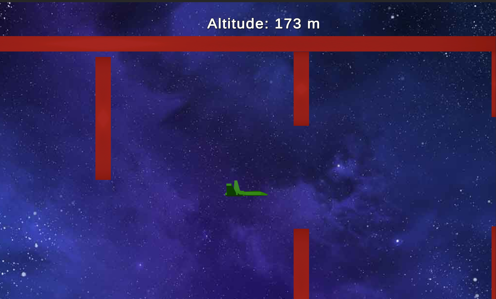
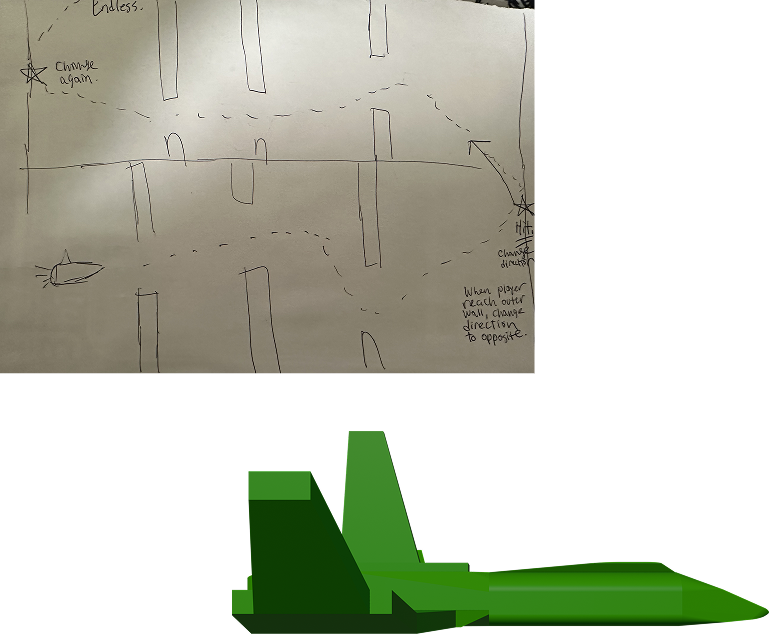
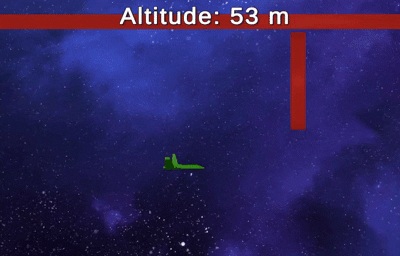
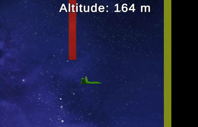
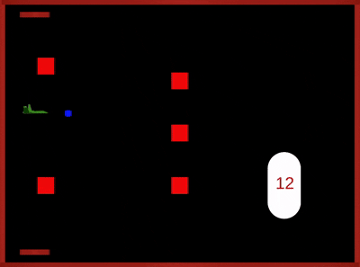
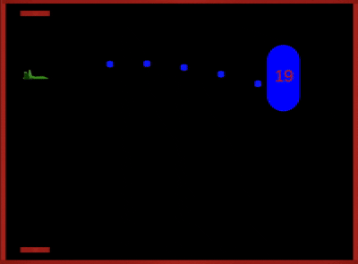

Altitude Rush


Altitude Rush is a fast-paced vertical arcade game where players guide a spaceship through challenging obstacles to climb as high as possible. Using the spacebar to control height, the ship rises while held and falls when released, requiring precise timing and focus.
• 2 Person Project
• Role: Game Designer / Programmer
• Built in Unity 2022.3.62f2
• 4 Week Development

My partner and I had a 2-hour conversation about what we wanted to create. Since it was a short project, we wanted simple mechanics with strong gameplay.
We took inspiration from the mobile game Flappy Bird, where the mechanics are simple, the gameplay runs endlessly until the player fails, and the main focus is on timing and precision. We liked how such a basic control system could still create a challenging and addictive experience.
From there, we decided to build on that idea by changing the horizontal progression into vertical progression. Instead of traveling forward for distance, players would climb upward, gaining altitude while avoiding obstacles. To make the gameplay more engaging, we added the idea of occasional boss fights to break up the obstacle pattern and give players something unexpected to overcome.
We then created a rough sketch of our layout and gameplay flow to visualize how everything would work beginning with the player's spaceship.


The spaceship is controlled using a simple rise-and-fall mechanic. Holding or clicking the spacebar lifts the ship upward while releasing it causes the ship to descend. Because the ship constantly moves forward, players must carefully time their inputs to navigate obstacles and maintain control through each section of the level.

When the spaceship collides with a wall, it rebounds in the opposite direction instead of stopping. This mechanic introduces additional challenge, requiring players to quickly adjust their movement and timing after impact while continuing to navigate the level.

Boss encounters appear periodically as players progress through the level. During these encounters, the boss launches projectiles while the player must continue navigating obstacles within the arena. Each time the boss appears, its total health increases based on the player's progress, gradually raising the difficulty and testing the player's control and timing.
One of the most important things that were iterated on throughout the development of this game involved the colliders of the spaceship and obstacles. It was noticed that the boundaries of these colliders were too narrow in the initial versions of level design, which led to unfair collision results even when there seemed to be enough space between two obstacles or an obstacle and the end of the level for the spaceship to pass through. Sometimes, obstacles also spawned in a way that there was not enough space for the spaceship to pass through in the first place.
During the playtesting phase, the players complained of the lack of flexibility in the movement of the spaceship, particularly during the boss fights, because the spaceship could only move vertically and not horizontally along the x-axis direction. To fix the problem of flexibility in the movement of the spaceship, the teleport feature was included, which would allow the player to teleport at the top or the bottom.


©2024 by Shion Lovelace.
All content, logos, and trademarks are the property of their respective owners.